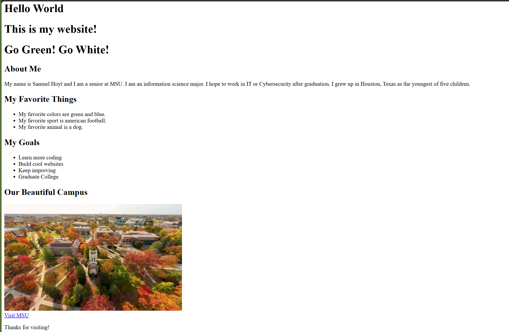
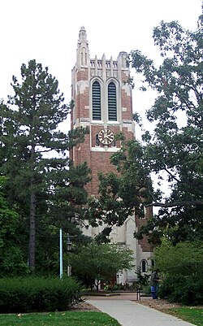
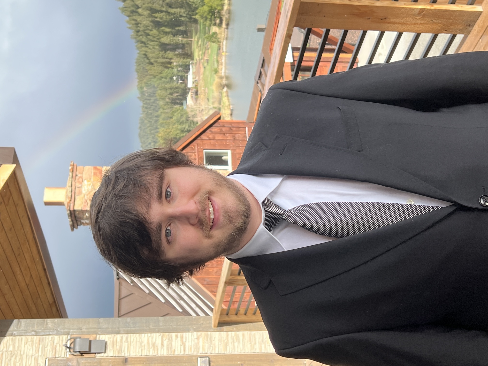
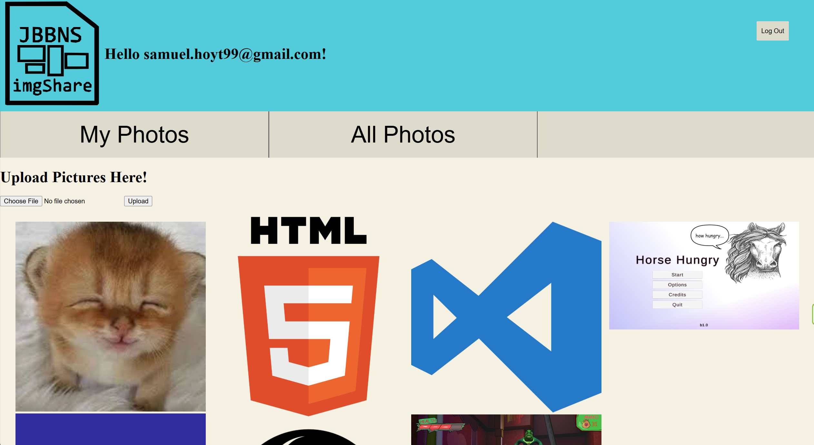

Hello World Site
Basic statc website.



I am MI 349 student and I am learning to make static websites, the basics of web deveopment, and web design. Im currently a student in the Communication Arts and Sciences department here at Michigan state University as a Information Science major. Before attending Michigan State, I was a student at Houston community college in Houston, Texas. After graduating I hope to go into the IT or cybersecurity industry. Ive always been curious about how computers work, how they communicate with each other, what kinds of cyber attacks there are, how to fix these issues when they arise. I have been pursuing certifications like CompTias Network+. I plan to pursue A+ and Security+ in the near future. Im not just pursuing these to look better for employers, but to expand my knowledge on something I've always been curious about.
In my spare time I enjoy playing video games and watching sports like american football and baseball. My favorite teams are the Houston Astros and Texans for the professional leagues and for college sports I support our Michigan State Spartans along with being a childhood fan of the Oklahoma Sooners. I grew up in Houston, Texas and am the youngest of five children.
Basic statc website.

Image storage website

hoytsamu@msu.edu